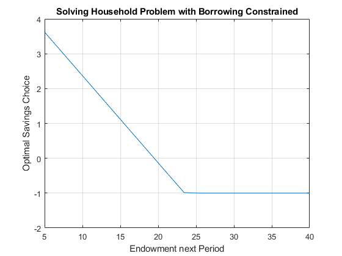
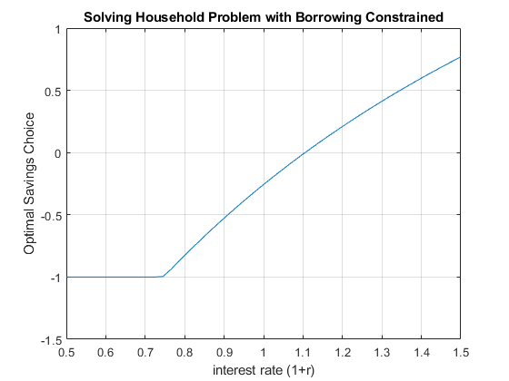
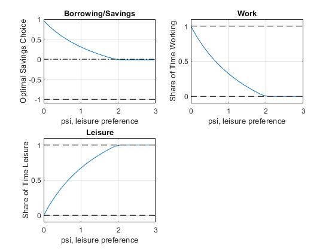

Chapter 10 Inequality Constrained Optimization
10.1 Borrowing Constrained Profit Maximization
Go back to fan’s CodeDynaAsset Package, Matlab Code Examples Repository (bookdown site), or Math for Econ with Matlab Repository (bookdown site).
In this problem, we solve the constrained firm’s profit maximization problem with decreasing returns to scale. This continues from the unconstrained profit maximization problem from Firm’s Profit Maximization Problem with Cobb Douglas Production Function (Decreasing Returns to Scale).
10.1.1 Firm and Capital and Labor
The problem is the same as before, the profit maximization problem is:
- \(\displaystyle \max_{K,L} \left(p\cdot A\cdot K^{\alpha } \cdot L^{\beta } -r\cdot K-w\cdot L\right)\)
The constraint is such that the firm can not borrow more than \(\bar{K}\)
- \(\displaystyle K\le \bar{K}\)
To find optimal choices, we will assume that \(\alpha +\beta <1\)
10.1.2 Lagrangian and First Order Conditions
\[\mathcal{L}=\left(p\cdot A\cdot K^{\alpha } \cdot L^{\beta } -r\cdot K-w\cdot L\right)-\lambda \left(K-\bar{K} \right)\]
\(\displaystyle \frac{\partial \mathcal{L}}{\partial K}:\alpha \cdot p\cdot A\cdot K^{\alpha -1} \cdot L^{\beta } -r=\lambda\)
\(\displaystyle \frac{\partial \mathcal{L}}{\partial L}:\beta \cdot p\cdot A\cdot K^{\alpha } \cdot L^{\beta -1} -w=\lambda\)
\(\displaystyle \lambda \left(K-\bar{K} \right)=0\)
\(\displaystyle \lambda \ge 0\)
\(\displaystyle K<\bar{K}\)
If the optimal unconstrained capital choice is less than \(\bar{K}\), then the inequality constraint can not impact optimal choices. The inequality constraint should disappear from the lagrangian, which is achieved with \(\lambda =0\).
If the optimal constrained capital choice would have been greater than \(\bar{K}\), then the constraint is binding, in the sense that the \(\bar{K}\) bound will limit the firm from borrowing optimally. The firm will borrow as much as it can so that \(K=\bar{K}\). Since \(K-\bar{K} =0\), \(\lambda \ge 0\). Note that the larger \(\lambda\) is, the greater the gap between marginal productivity and marginal cost.
10.1.3 Solving for Different Cases
When faced with inequality constrained problems, we have to solve the problem in different possible cases in which different combinations of the inequality constraints present would be binding. Then we compare across cases to find the case that maximized the objective.
Our problem here is simpler, we only have two cases:
The inequality constraint does not bind, which means we can use the optimal unconstrained capital and labor choices we found previously in Firm’s Profit Maximization Problem with Cobb Douglas Production Function (Decreasing Returns to Scale).
The inequality constraint does bind for capital, which means we solve for optimal labor choice given fixed level of capital. This is exactly what we did in Firm’s Profit Maximization Problem and Optimal Capital Choice, except there we solve for optimal capital fixing labor. Now we need to solve for optimal labor fixing capital at the constraint.
10.1.4 Solution
With con denoting constrained, unc denoting unconstrained, we have:
\[K^{\textrm{con}} =\left\lbrace \begin{array}{c} K^{\textrm{unc}} \textrm{,}\;\textrm{if}\;K^{\textrm{unc}} <\bar{K} \\ \bar{K} \textrm{,}\;\textrm{otherwise} \end{array}\right.\]
\[L^{\textrm{con}} =\left\lbrace \begin{array}{c} L^{\textrm{unc}} \textrm{,}\;\textrm{if}\;K^{\textrm{unc}} <\bar{K} \\ \arg \max_L \Pi \left(\bar{K} ,L;r,w\right)\textrm{,}\;\textrm{otherwise} \end{array}\right.\]
10.2 Constrained Borrowing and Savings
Go back to fan’s CodeDynaAsset Package, Matlab Code Examples Repository (bookdown site), or Math for Econ with Matlab Repository (bookdown site).
We previously solved for the unconstrained household’s savings and borrowing problem: unconstrained problem.
10.2.1 What is the constrained borrowing problem?
Imagine if endowment in the first period is \(Z_1\), but now endowment in the second period is \(Z_2\).
Utility: \(U(c_{today} ,c_{tomrrow} )=\log (c_{today} )+\beta \cdot \log (c_{tomorrow} )\)
Budget Today: \(c_{today} +b=Z_1\)
Budget Tomorrow: \(c_{tomorrow} =b\cdot (1+r)+Z_2\)
Now \(b\) can be positive or negative. Generally, if you go to a bank, they let you save however much you want to deposit there, but you don’t usually get to borrow any amount you would like to borrow. Remember we discussed before there is the natural borrowing constriant in this model, which restricts borrowing what what we can repay in the worst state of shock tomorrow (there is only one state in this case), so borrowing is already naturally constrained by the household’s optimization problem.
If the borrowing constraint of the bank is lower than the natural borrowing constraint, it is irrelevant, but if it is tighter than the natural borrowing constraint, then it becomes relevant.
10.2.2 Inequality Constraint
We can formulate the problem above as having 1 savings choice that is constrained.
The objective function is :
generally: \(\max_b f(b)\)
specifically: \(\max_b \log (Z_1 -b)+\beta \cdot \log (Z_2 +b\cdot (1+r))\)
And the constraint is:
- \(\displaystyle b\ge \bar{b}\)
\(\bar{b}\) is the borrowing limit. Note that because \(b\) is negative when we are borrowing, so a higher upper bound on how much you can borrow is represented by a more negative \(\bar{b}\).
We can think of the inequality constraint more generally as a function:
- \(\displaystyle g(b)\le q\)
Where \(g\) is some function of \(b\), and \(q\) is just a number, note that we want to write this as the function of the choice is less than or equal to something. For our example here, you can think of function \(g\) as: \(g(b)=-b\) and \(q=-\bar{b}\); or \(g(b)=\bar{b} -b\), \(q=0\). They of course are the same:
- \(\displaystyle \bar{b} -b\le 0\)
10.2.3 Lagrangian with Inequality Constraint
When we write the lagrangian, we have to be careful about the signs, writing the inequality constraint as we do above, we will do the "double negative" as we did with equality constraint when we add in the lagrange multiplier term, the lagrangian is:
- \(\displaystyle \mathcal{L}=\left\lbrace \log (Z_1 -b)+\beta \cdot \log (Z_2 +b\cdot (1+r))\right\rbrace -\lambda \cdot (\bar{b} -b-0)\)
For inequality constraint, we follow SB and use \(\lambda\) for the lagrange multiplier.
10.2.4 Derivative with Respect to \(b\)
The key thing to understand about inequality constraint is that the first order condition that we had from the unconstrained problem no longer holds. Specifically, the uncontrained problem’s derivative with respect to \(b\) set equal to \(0\) would be:
- \(\displaystyle \frac{1}{Z_1 -b}=\beta \frac{1+r}{Z_2 +b(1+r)}\)
Which means the Marginal Utility of Consumption today must be equal to the Marginal Utility of Consumption tomorrow. The household will use saving and borrowing as a mechanism to smooth their consumption given their endowment in each period, the interest rate, and discount factor. But now, with the inequlaity constraint, the derivative of the lagrangian with respect to \(b\) set equal to \(0\) is:
- \(\displaystyle \frac{1}{Z_1 -b}=\beta \frac{1+r}{Z_2 +b(1+r)}+\lambda\)
We gained an extra \(\lambda\) term. Given that we can not adjust (borrow) \(b\) freely now, we might have too little consumption today, leading to high marginal utility of consumption today, and too much consumption tomorrow (due to higher endowment), leading to lower marginal utility of consumption tomorrow. Without constraint, we would have chosen, \(b^{*,\textrm{unconstrained}}\): borrowing today to reduce marginal utilty today and increase marginal utility tomorrow until consumption is smoothed over the two periods. With constraint, we would chose, \(b^{*,\textrm{constrained}}\). If \(b^{*,\textrm{unconstrained}} \ge \bar{b}\), then the constraint does not matter, and \(\lambda =0\), if \(b^{*,\textrm{unconstrained}} <\bar{b}\), then the constraint does matter, and \(\lambda >0\) in this case to account for the marginal utility cost of the borrowing constraint.
10.2.5 First Order Conditions with Inequality Constraint
Following our discussion above, what are the conditionals that the optimal choice must satisfy in the prescence of inequality constraint?
The general problem here is:
\(\displaystyle \max_b f(b)\)
such that: \(g(b)\le q\)
With Lagrangian:
- \(\displaystyle \mathcal{L}=f(b)-\lambda \cdot (g(b)-g)\)
Suppose that \(f\) and \(g\) functions are both continuously differentiable, and \(b^*\) maximizes \(f\) given the constraint, then there exists \(\lambda^*\), such that:
\(\displaystyle \frac{\partial \mathcal{L}}{\partial b}(b^* ,\lambda^* )=0\)
\(\displaystyle \lambda^* \cdot [g(b^* )-q]=0\)
\(\displaystyle \lambda^* \ge 0\)
\(\displaystyle g(b^* )\le q\)
When the constraint does not bind, \(\lambda^* =0\), satisfying the second and third conditions, and the fourth condition is a strict inequality, and the first condition’s derivative is the same as the one in the unconstrained problem. When the constraint does bind, the fourth condition is an equality constraint, \(\lambda\) is a postive number as in the example above.
10.2.6 Solving the Problem
How do we solve this problem? Given that the problem here only has one choice, and given the concavity of log utility, and the linear constraints, we can solve the unconstrained problem first, if the optimal unconstrained choice is less than the constraint bound, then the optimal choice with be the \(b^* =\bar{b}\), if the optimal unconstrained choice is greater than the constraint bound, then the \(b^* =b^{*,\textrm{unconstrained}}\).
Our brute force method also works well in this case, we simply limit the grid of feasible \(b\) choices to be within the constraint set, and find the point along the grid where utility is the highest.
Matlab has a conveninent function that solves any constrained maximization problem, fmincon, we will use it here. First, let’s write our constraint like this:
we had: \(\bar{b} -b\le 0\)
this is also: \(\left\lbrack \begin{array}{c} -1 \end{array}\right\rbrack \cdot \left\lbrack \begin{array}{c} b \end{array}\right\rbrack \le \left\lbrack \begin{array}{c} -\bar{b} \end{array}\right\rbrack\)
we can think of this as: \(A\cdot b\le q\). The \(A\) matrix and \(q\) vector represent the set of linear constraints.
Define the parameters and the equations
clear all
% Parameters
beta_num = 0.95;
z1_num = 10;
z2_num = 20;
r_num = 1.05;
b_bar_num = -1; % borrow up to 1 dollar
% Write down the objective function, we will define it as a function handle, negative utility for minimization
syms beta z1 z2 r
UNeg = @(b) -1*(log(z1 - b) + beta*log(z2 + b*(1+r)))
UNeg =
@(b)-1*(log(z1-b)+beta*log(z2+b*(1+r)))
% Constraint
A = [-1];
q = -b_bar_num;Now call fminunc to solve
b0 = [0] % starting value to search for optimal choice
b0 = 0
UNeg_num = matlabFunction(subs(UNeg, {beta, z1, z2, r}, {beta_num, z1_num, z2_num, r_num}));
[bOpti,UatBOpti] = fmincon(UNeg_num, b0, A, q);
Local minimum found that satisfies the constraints.
Optimization completed because the objective function is non-decreasing in
feasible directions, to within the value of the optimality tolerance,
and constraints are satisfied to within the value of the constraint tolerance.
<stopping criteria details>
bOpti
bOpti = -0.1313
UatBOpti
UatBOpti = -5.148710.2.7 Effects of \(Z_2\) on optimal choices
How does optimal choice change if the household has more endowment tomorrow?
% Create a vector of Z2, so Z2 fector starts at the same value as Z1*0.5 going up to 4 times Z1
Z2_vec = linspace(z1_num*0.5, z1_num*4, 20)
Z2_vec = 1x20
5.0000 6.8421 8.6842 10.5263 12.3684 14.2105 16.0526 17.8947 19.7368 21.5789 23.4211 25.2632 27.1053 28.9474 30.7895 32.6316 34.4737 36.3158 38.1579 40.0000
% A vector to store optimal choices
bOpti_vec = zeros(size(Z2_vec));
% Solving for optimal choices as we change Z2
for i=1:1:length(Z2_vec)
UNeg_num = matlabFunction(subs(UNeg, {beta, z1, z2, r}, {beta_num, z1_num, Z2_vec(i), r_num}));
options = optimoptions('FMINCON','Display','off');
[bOpti,UatBOpti] = fmincon(UNeg_num, b0, A, q, [], [], [], [], [], options);
bOpti_vec(i) = bOpti;
end
% Plot Results
figure()
plot(Z2_vec, bOpti_vec)
grid on;
ylim([-2 4]);
title('Solving Household Problem with Borrowing Constrained')
ylabel('Optimal Savings Choice')
xlabel('Endowment next Period')
10.2.8 Effects of \(r\) on optimal choices
How does optimal choice change if the household has more endowment tomorrow?
% Vector of interest rates
r_vec = linspace(0.5, 1.50, 50);
% A vector to store optimal choices
bOpti_vec = zeros(size(r_vec));
% Solving for optimal choices as we change Z2
for i=1:1:length(r_vec)
UNeg_num = matlabFunction(subs(UNeg, {beta, z1, z2, r}, {beta_num, z1_num, z2_num, r_vec(i)}));
options = optimoptions('FMINCON','Display','off');
[bOpti,UatBOpti] = fmincon(UNeg_num, b0, A, q, [], [], [], [], [], options);
bOpti_vec(i) = bOpti;
end
% Plot Results
figure()
plot(r_vec, bOpti_vec)
ylim([-1.5 1]);
grid on;
title('Solving Household Problem with Borrowing Constrained')
ylabel('Optimal Savings Choice')
xlabel('interest rate (1+r)')
10.3 Leisure, Savings and Constrained Borrowing
Go back to fan’s CodeDynaAsset Package, Matlab Code Examples Repository (bookdown site), or Math for Econ with Matlab Repository (bookdown site).
We previously solved for the unconstrained household’s savings and borrowing problem: unconstrained problem. And we previously solved for the constrained savings and borrowing problem for the household without labor: Constrained Household Borrowing.
10.3.1 What is the constrained asset choice problem with labor?
We have endowments in two periods, \(Z_1\) and \(Z_2\). Households can choose to work or have leisure. Think about the first period as the young period, the second period as the old period (retirement). Your wage in the first period could be used for first period consumption or saved for consumption in retirement.
Utility: \(U(c_{today} ,c_{tomrrow} )=\log (c_{today} )+\psi \log (\textrm{leisure})+\beta \cdot \log (c_{tomorrow} )\)
Budget Today: \(c_{today} +b=Z_1 +w\cdot \textrm{work}\)
Budget Tomorrow: \(c_{tomorrow} =b\cdot (1+r)+Z_2\)
\(w\) is the wage, and \(b\) can be positive or negative.
10.3.2 Single Inequality Constraint Problem
We can formulate the constrained problem as this:
- specifically:
\[\max_{b,\textrm{work}} \log (Z_1 +w\cdot \textrm{work}-b)+\psi \log (\textrm{T}\textrm{-}\textrm{work})+\beta \cdot \log (Z_2 +b\cdot (1+r))\]
And the constraints is:
\[b\ge \bar{b}\]
We plugged \(b\) into the utility function, so that we do not have to choose \(c_1\) and \(c_2\) explicitly. We also replaced leisure by \(T-work\) in the utility. Additionally leisure will always be positive due to log utility. We have an utility maximization problem with a single inequality constraint, which is that the household can not borrow more than \(\bar{b}\). Then, we would solve for the unconstrained optimal work and \(b\) choices, if the optimal unconstrained \(b\) choice is larger than \(\bar{b}\), then we are done, otherwise, we solve for the optimal work choice given \(b=\bar{b}\).
\[b^{\textrm{con}} =\left\lbrace \begin{array}{c} b^{\textrm{unc}} \textrm{,}\;\textrm{if}\;b^{\textrm{unc}} >\bar{b} \\ \bar{b} \textrm{,}\;\textrm{otherwise} \end{array}\right.\]
\[{\textrm{work}}^{\textrm{con}} =\left\lbrace \begin{array}{c} {\textrm{work}}^{\textrm{unc}} \textrm{,}\;\textrm{if}\;b^{\textrm{unc}} <\bar{b} \\ \arg \max_{\textrm{work}} U\left(\bar{b} ,\textrm{work};r,w\right)\textrm{,}\;\textrm{otherwise} \end{array}\right.\]
In the sections below, we:
solve analytically the unconstrained optimal choices by hand and using the symbolic toolbox
solve the optimal work time choice given binding borrowing constraint
solve numerically directly for the constrained optimal choices
10.3.3 Unconstrained Optimal Labor and Borrowing and Savings Choices Prlbme
To solve the problem, we write down the Lagrangian, and solve a problem with three choices, and let us use \(H=\textrm{work}\) to represent work time:
- \(\displaystyle \mathcal{L}=\log (Z_1 +w\cdot H-b)+\psi \log (\textrm{T}\textrm{-}\textrm{H})+\beta \cdot \log (Z_2 +b\cdot (1+r))\)
We have two partial derivatives of the lagrangian, and at the optimal choices, these are true:
\(\frac{\partial \mathcal{L}}{\partial b}=0\), then, \(\frac{1}{Z_1 +w\cdot H-b}=\frac{\beta \cdot (1+r)}{Z_2 +b\cdot (1+r)}\)
\(\frac{\partial \mathcal{L}}{\partial H}=0\), then, \(\frac{w}{Z_1 +w\cdot H-b}=\frac{\psi }{T-H}\)
Unconstrained Choices–One Equation and One Unknown
We have two equations and two unknowns, from the two FOCs above, we have:
\(\displaystyle \frac{\beta \cdot (1+r)}{Z_2 +b\cdot (1+r)}=\frac{\psi }{w\cdot \left(T-H\right)}\)
\(\displaystyle H=T-\frac{Z_2 +b\cdot (1+r)}{\beta \cdot (1+r)}\cdot \frac{\psi }{w}\)
Then pluggint this back in to the first FOC, we have:
\(\displaystyle \frac{1}{Z_1 +w\cdot \left(T-\frac{Z_2 +b\cdot (1+r)}{\beta \cdot (1+r)}\cdot \frac{\psi }{w}\right)-b}=\frac{\beta \cdot (1+r)}{Z_2 +b\cdot (1+r)}\)
\(\displaystyle \frac{1}{Z_1 +wT-\frac{\psi }{\beta (1+r)}Z_2 -\left(1+\frac{\psi }{\beta }\right)b}=\frac{\beta (1+r)}{Z_2 +b(1+r)}\)
This is one equation and one unknown.
Unconstrained Choices–Analytical Optimal Borrowing and Savings Choice
We use \(\Omega\) and \(\chi\) to replace some terms above, and have:
\(\displaystyle \frac{1}{\Omega -\chi b}=\frac{\beta }{Z_2 \frac{1}{1+r}+b}\)
\(\displaystyle Z_2 \frac{1}{1+r}+b=\Omega \beta -\chi \beta b\)
\(\displaystyle b^{\ast } =\frac{\Omega \beta -\frac{1}{1+r}Z_2 }{1+\chi \beta }\)
Above we have the optimal borrowing and savings choice solution, to better interpret it, we plug \(\Omega\) and \(\chi\) back in
\(\displaystyle b^{\ast } =\frac{\left(Z_1 +wT-\frac{\psi }{\beta (1+r)}Z_2 \right)\beta -\frac{1}{1+r}Z_2 }{1+\left(1+\frac{\psi }{\beta }\right)\beta }\)
\(\displaystyle b^{\ast } =\frac{\left(Z_1 (1+r)+wT(1+r)-\frac{\psi }{\beta }Z_2 \right)\beta -Z_2 }{\left(1+r\right)\left(1+\beta +\psi \right)}\)
\(\displaystyle b^{\ast } =\frac{\left(Z_1 +wT\right)\beta (1+r)-\left(1+\psi \right)Z_2 }{\left(1+r\right)\left(1+\beta +\psi \right)}\)
\(\displaystyle b^{\ast } =\frac{\left(Z_1 +wT\right)\beta -\frac{1+\psi }{1+r}Z_2 }{1+\beta +\psi }\)
Our optimal borrowing and savings choice is:
\[b^{\ast ,unc} =\frac{\left(Z_1 +wT\right)\beta -\frac{1+\psi }{1+r}Z_2 }{1+\beta +\psi }\]
\[{\textrm{work}}^{\ast ,unc} ={\textrm{H}}^{\ast ,unc} =T-\frac{Z_2 +b^{\ast ,unc} \cdot (1+r)}{\beta \cdot (1+r)}\cdot \frac{\psi }{w}\]
The solution here is very similar to the solution we derived for the borrowing and savings problem earlier. Note that the key difference here is that wage and total time: \(w\cdot T\) are simply increasing today’s endowment. When the individual prefers leisure more, the individual is more likely to borrow. We have just solved for the unconstrained optimal choices
Unconstrained Choices–Matlab Analytical Symbolic Solutions
Matlab can solve the optimal choices for us. We can use diff and solve, the solution below is identical to the solution we derived on top.
syms r z1 z2 w head b T H beta psi
% The Lagrangian
lagrangian = (log(z1 + w*H- b) + psi*log(T-H) + beta*log(z2 + b*(1+r)))lagrangian = \(\displaystyle \log \left(z_1 -b+H\,w\right)+\psi \,\log \left(T-H\right)+\beta \,\log \left(z_2 +b\,{\left(r+1\right)}\right)\)
% Derivatives
d_lagrangian_b = diff(lagrangian, b);
d_lagrangian_H = diff(lagrangian, H);
GRADIENTmax = [d_lagrangian_b; d_lagrangian_H]GRADIENTmax = \(\displaystyle \left(\begin{array}{c} \frac{\beta \,{\left(r+1\right)}}{z_2 +b\,{\left(r+1\right)}}-\frac{1}{z_1 -b+H\,w}\\ \frac{\psi }{H-T}+\frac{w}{z_1 -b+H\,w} \end{array}\right)\)
% Given we have many symbols, type K, L, mu at the end to let matlab know what we are solving for
solu = solve(GRADIENTmax(1)==0, GRADIENTmax(2)==0, b, H, 'Real', true);
solub = simplify(solu.b)solub = \(\displaystyle \frac{\beta \,z_1 -z_2 -\psi \,z_2 +T\,\beta \,w+\beta \,r\,z_1 +T\,\beta \,r\,w}{{\left(r+1\right)}\,{\left(\beta +\psi +1\right)}}\)
soluH = (solu.H)soluH = \(\displaystyle \frac{T\,w-\psi \,z_1 -\psi \,z_2 +T\,\beta \,w+T\,r\,w-\psi \,r\,z_1 +T\,\beta \,r\,w}{w+\beta \,w+\psi \,w+r\,w+\beta \,r\,w+\psi \,r\,w}\)
Work Choice given Binding Borrowing Constraint–Matlab Analytical Symbolic Solutions
Now we solve, if the household’s borrowing choice is constrained, that is the borrowing constraint binds, then the household optimizes work time choice given \(b=\bar{b}\).
syms r z1 z2 w head bbar T H beta psi
% The Lagrangian
lagrangian = (log(z1 + w*H- bbar) + psi*log(T-H) + beta*log(z2 + bbar*(1+r)))lagrangian = \(\displaystyle \log \left(z_1 -\textrm{bbar}+H\,w\right)+\psi \,\log \left(T-H\right)+\beta \,\log \left(z_2 +\textrm{bbar}\,{\left(r+1\right)}\right)\)
% Derivatives
d_lagrangian_H = diff(lagrangian, H);
GRADIENTmax = [d_lagrangian_H]GRADIENTmax = \(\displaystyle \frac{\psi }{H-T}+\frac{w}{z_1 -\textrm{bbar}+H\,w}\)
% Given we have many symbols, type K, L, mu at the end to let matlab know what we are solving for
solu = solve(GRADIENTmax(1)==0, H, 'Real', true);
solusolu = \(\displaystyle \frac{T\,w+\textrm{bbar}\,\psi -\psi \,z_1 }{w+\psi \,w}\)
10.3.4 Numerical Solution to the Inequality Constraint Problem
We can formulate the constrained problem as this:
- specifically: \(\max_{b,\textrm{work},\textrm{leisure}} \log (Z_1 +w\cdot \textrm{work}-b)+\psi \log (\textrm{leisure})+\beta \cdot \log (Z_2 +b\cdot (1+r))\)
And the constraints are:
\(\displaystyle b\ge \bar{b}\)
\(\displaystyle \textrm{work}\ge 0\)
\(\displaystyle \textrm{leisure}\ge 0\)
\(\textrm{work}+\textrm{leisure}\le T\), where \(T\) is total time available
We plugged \(b\) into the utility function, so that we do not have to choose \(c_1\) and \(c_2\) explicitly. We could also replace leisure by \(T-work\) in the utility. Additionally leisure will always be positive due to log utility. If we did that, we have an utility maximization problem with a single inequality constraint, which is that the household can not borrow more than \(\bar{b}\). Then, we would solve for the unconstrained optimal work and \(b\) choices, if the optimal unconstrained \(b\) choice is larger than \(\bar{b}\), then we are done
Formulating the Constraints as a System of Linear Equations
Matlab has a conveninent function that solves any constrained maximization problem, fmincon, we used it for one choice and one constraint before:Constrained Household Borrowing. Now we have four constraints and three choice variables, we write them all as less than or equal to:
\(\displaystyle \bar{b} -b\le 0\)
\(\displaystyle -\textrm{work}\le 0\)
\(\displaystyle -\textrm{leisure}\le 0\)
\(\displaystyle \textrm{work}+\textrm{leisure}\le T\)
This is actually a linear system, the equations above are equal to:
\(\displaystyle (-1)\cdot b+0\cdot \textrm{work}+0\cdot \textrm{leisure}\le -\bar{b}\)
\(\displaystyle 0\cdot b+(-1)\cdot \textrm{work}+0\cdot \textrm{leisure}\le 0\)
\(\displaystyle 0\cdot b+0\cdot \textrm{work}+(-1)\cdot \textrm{leisure}\le 0\)
\(\displaystyle 0\cdot b+1\cdot \textrm{work}+1\cdot \textrm{leisure}\le T\)
Which mean that we have a \(A\) matrix and \(q\) vector:
- \(\displaystyle \left\lbrack \begin{array}{ccc} -1 & 0 & 0\\ 0 & -1 & 0\\ 0 & 0 & -1\\ 0 & 1 & 1 \end{array}\right\rbrack \cdot \left\lbrack \begin{array}{c} b\\ \textrm{work}\\ \textrm{leisure} \end{array}\right\rbrack \le \left\lbrack \begin{array}{c} -\bar{b} \\ 0\\ 0\\ T \end{array}\right\rbrack\)
clear all
% Parameters
beta = 0.95;
psi = 0.5;
z1 = 1;
z2 = 2;
r = 1.05;
b_bar_num = -1; % borrow up to 1 dollar
w = 2; % wage rate
T = 1; % think about time as share of time in a year
% Write down the objective function, we will define it as a function handle, negative utility for minimization
U_neg = @(x) -1*(log(z1 + w*x(2) - x(1)) + psi*log(x(3)) + beta*log(z2 + x(1)*(1+r)));
% Constraint dervied above
A = [-1,0,0;0,0,-1;0,-1,0;0,1,1];
q = [-b_bar_num;0;0;T];
b0 = [0,0.5,0.5]; % starting value to search for optimal choice
% U_neg_num = matlabFunction(subs(U_neg, {beta, z1, z2, r}, {beta_num, z1_num, z2_num, r_num}));
[x_opti,U_at_b_opti] = fmincon(U_neg, b0, A, q);
Local minimum found that satisfies the constraints.
Optimization completed because the objective function is non-decreasing in
feasible directions, to within the value of the optimality tolerance,
and constraints are satisfied to within the value of the constraint tolerance.
<stopping criteria details>
b_opti = x_opti(1);
work_opti = x_opti(2);
leisure_opti = x_opti(3);
disp(table(b_opti, work_opti, leisure_opti));
b_opti work_opti leisure_opti
_______ _________ ____________
0.56595 0.59433 0.40567 10.3.5 Effects of \(\psi\) on optimal choices
How does optimal choice change if the preference for leisure is different? What does the optimal borrowing and savings choice stop shifting when work hour choice constraint becomes binding?
% Create a vector of Z2, so Z2 fector starts at the same value as Z1*0.5 going up to 4 times Z1
psi_vec = linspace(0, 3, 20);
% A vector to store optimal choices
b_opti_vec = zeros(size(psi_vec));
work_opti_vec = zeros(size(psi_vec));
leisure_opti_vec = zeros(size(psi_vec));
% Solving for optimal choices as we change Z2
for i=1:1:length(psi_vec)
U_neg = @(x) -1*(log(z1 + w*x(2) - x(1)) + psi_vec(i)*log(x(3)) + beta*log(z2 + x(1)*(1+r)));
options = optimoptions('FMINCON','Display','off');
[x_opti,U_at_x_opti] = fmincon(U_neg, b0, A, q, [], [], [], [], [], options);
b_opti_vec(i) = x_opti(1);
work_opti_vec(i) = x_opti(2);
leisure_opti_vec(i) = x_opti(3);
end
% Plot Results
figure()
subplot(2,2,1)
plot(psi_vec, b_opti_vec)
ylim([-1.1 1]);
hold on
plot(psi_vec,ones(size(psi_vec)) * 0, 'k-.');
plot(psi_vec,ones(size(psi_vec)) * -1, 'k--');
grid on;
title('Borrowing/Savings')
ylabel('Optimal Savings Choice')
xlabel('psi, leisure preference')
subplot(2,2,2)
plot(psi_vec, work_opti_vec)
ylim([-0.1 1.1]);
hold on;
plot(psi_vec,ones(size(psi_vec)) * 1, 'k--');
plot(psi_vec,ones(size(psi_vec)) * 0, 'k--');
grid on;
title('Work')
ylabel('Share of Time Working')
xlabel('psi, leisure preference')
subplot(2,2,3)
plot(psi_vec, leisure_opti_vec)
ylim([-0.1 1.1]);
hold on;
plot(psi_vec,ones(size(psi_vec)) * 1, 'k--');
plot(psi_vec,ones(size(psi_vec)) * 0, 'k--');
grid on;
title('Leisure')
ylabel('Share of Time Leisure')
xlabel('psi, leisure preference')
10.3.6 Effects of \(r\) and \(z_2\) on optimal choices
How does optimal choice change if the household has more endowment tomorrow and what if interest rate changes? See double loop below.
% Vector of interest rates
r_vec = linspace(0.4, 1.50, 20);
% Vector of Z2
Z2_vec = linspace(z1*1, z1*3, 2);
% A vector to store optimal choices
rows = length(r_vec);
cols = length(Z2_vec);
b_opti_mat = zeros(rows, cols);
work_opti_mat = zeros(rows, cols);
leisure_opti_mat = zeros(rows, cols);
% Solving for optimal choices as we change Z2
for j=1:1:length(Z2_vec)
for i=1:1:length(r_vec)
U_neg = @(x) -1*(log(z1 + w*x(2) - x(1)) + psi*log(x(3)) + beta*log(Z2_vec(j) + x(1)*r_vec(i)));
options = optimoptions('FMINCON','Display','off');
[x_opti,U_at_x_opti] = fmincon(U_neg, b0, A, q, [], [], [], [], [], options);
b_opti_mat(i, j) = x_opti(1);
work_opti_mat(i, j) = x_opti(2);
leisure_opti_mat(i, j) = x_opti(3);
end
end
% Plot Results
legendCell = cellstr(num2str(Z2_vec', 'Z2=%-d'));
figure()
subplot(2,2,1)
plot(r_vec, b_opti_mat)
ylim([-1.1 1]);
hold on
plot(r_vec,ones(size(r_vec)) * 0, 'k-.');
plot(r_vec,ones(size(r_vec)) * -1, 'k--');
grid on;
title('Borrowing/Savings')
ylabel('Optimal Savings Choice')
xlabel('interest rate')
legend(legendCell, 'Location','northwest');
subplot(2,2,2)
plot(r_vec, work_opti_mat)
ylim([-0.1 1.1]);
hold on;
plot(r_vec,ones(size(r_vec)) * 1, 'k--');
plot(r_vec,ones(size(r_vec)) * 0, 'k--');
grid on;
title('Work')
ylabel('Share of Time Working')
xlabel('interest rate')
legend(legendCell);
subplot(2,2,3)
plot(r_vec, leisure_opti_mat)
ylim([-0.1 1.1]);
hold on;
plot(r_vec,ones(size(r_vec)) * 1, 'k--');
plot(r_vec,ones(size(r_vec)) * 0, 'k--');
grid on;
title('Leisure')
ylabel('Share of Time Leisure')
xlabel('interest rate')
legend(legendCell);